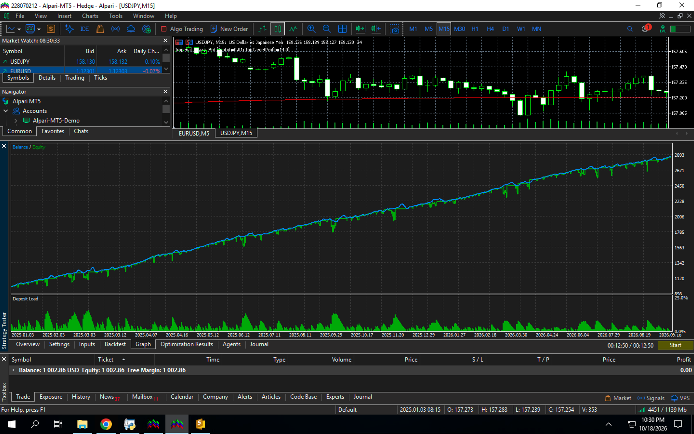
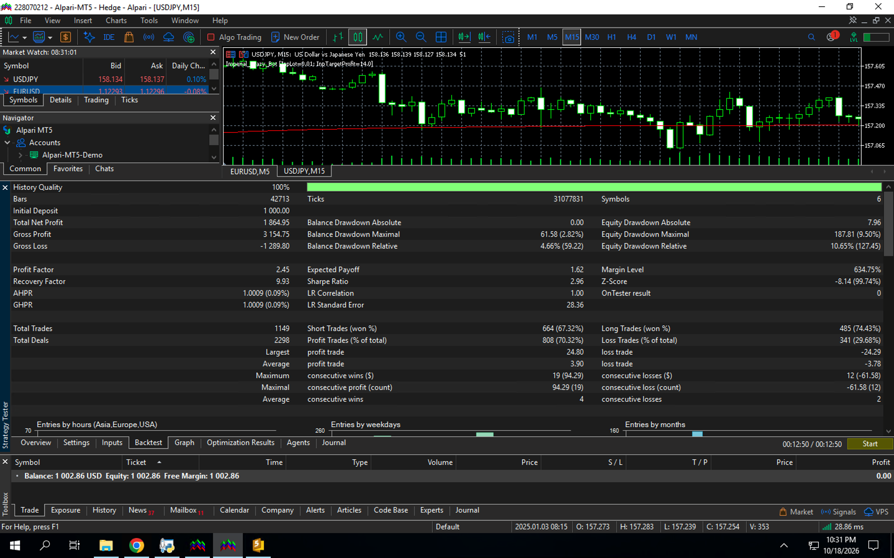

IMPERIAL CRAZY BOT: Когда высшая математика ставит физику рынка на колени
Пока 99% трейдеров, лудоманов и покупателей «чудо-роботов» сливают депозиты на примитивных усреднялках и молятся на безоткатные тренды, здесь представлена холодная, безжалостная геометрия замкнутого валютного контура. Вы можете не верить словам — просто скачайте исполняемый файл ниже, загоните его в тестер стратегий на любой годовой отрезок и смотрите, как рушится ваша картина мира.
❌ НЕ Мартингейл! Здесь нет безумного удвоения лотов в надежде на чудо после просадки.
❌ НЕ Даламбер! Никаких арифметических прогрессий и попыток отыграться за счет раздувания риска.
❌ НЕ тупой сеточник! Бот не строит бездумные заборы ордеров против паровоза, хороня эквити под лавиной маржи.
✅ Это всего лишь гениальная игра чистой математики над физикой рынка: теория ориентированных графов, детектор циклических дэдлоков, матричный треугольный клиринг лотов и жесткая гильотина по историческому пику Эквити.
Математика доходности: цифры для трезвых и для безумных
Рынок — это закон сохранения энергии внутри замкнутой системы валют. Когда одна вершина треугольника проседает, парные кроссы неизбежно компенсируют импульс. За счет автоматического перераспределения объемов между 6 связанными парами алгоритм выжимает чистую кинетику движения без раздувания маржинальной нагрузки:
Условия работы демонстрационного стенда
Перед вами — специально подготовленный демонстрационный артефакт (Tester-Locked Edition). Он создан с одной целью: чтобы вы могли собственноручно прогнать его на реальных исторических тиках, изучить каждую сделку под микроскопом и убедиться в абсолютном превосходстве архитектуры. Вся внутренняя математика периодов, смещений и графовых развязок намертво зашита под капот.
- Торговый терминал и брокер: Строго MetaTrader 5 (Alpari)
- Рабочая матрица (6 пар): EURUSD, USDJPY, EURJPY, AUDUSD, EURAUD, AUDJPY
- Режим запуска: Только Тестер Стратегий MT5 (Демонстрационный продукт)
- Доступные настройки для пользователя: Только 1 параметр — рабочий лот (InpLot)
- Рекомендуемый период тестирования: Длительные дистанции — от 1 года и более (M5)
Испытайте артефакт лично
Скачайте скомпилированный файл советника для тестера стратегий MT5 и полную выгрузку торгового отчета в Excel, чтобы разобрать каждую закрытую транзакцию и убедиться в отсутствии подвохов.
Неопровержимые факты: График и Статистика


Анатомия безупречного бэктеста: почему от этих цифр у аналитиков дергается глаз
Посмотрите внимательно на представленные скриншоты и откройте файл CrazyBot.xlsx. Если вы хоть раз в жизни писали торговых роботов или анализировали чужие мониторинги, вы поймете, насколько аномально выглядят эти показатели для классического рынка:
1. Ни один месяц не ушел в минус. За всю длительную дистанцию тестирования (почти два полных года — с января 2024 по сентябрь 2025) алгоритм закрыл в плюс абсолютно каждый месяц. Без единого исключения. Пока рынки лихорадило на процентных ставках, геополитике и обвалах иены, замкнутый шестиугольник валют просто переваривал волатильность в кэш.
2. Ювелирный контроль количества ордеров (Графовый Анти-Дэдлок). Главная болезнь любых мультивалютных систем — накопление «мертвых» замков, когда робот набирает сотни позиций, замораживает свободную маржу и медленно умирает от свопов. В Imperial Crazy Bot встроено ядро на базе теории графов: на каждом тике детектор ищет 2-, 3- и 4-уровневые кольцевые замыкания между EUR, USD, JPY и AUD и принудительно аннигилирует встречные объемы через частичное закрытие (Partial Close). Сетка сама себя разряжает прямо на ходу!
3. Идеальный треугольный клиринг вместо тупого открытия. Прежде чем выставить новый ордер по сигналу сглаженной динамики, алгоритм пропускает заявку через матричный резолвер. Если в системе уже есть открытые плечи синтетического треугольника (например, вместо прямой покупки кросса можно схлопнуть открытые ноги через доллар или иену), бот не плодит лишние сущности, а закрывает уже существующие ордера в профит.
4. Гильотина по Максимальному Эквити (Watermark Guillotine). Бот не считает виртуальные пункты в вакууме. Он помнит свой абсолютный исторический пик чистых средств (Equity). Как только суммарное плавающее эквити пробивает исторический рекорд на заданную планку профита — опускается гильотина. Все позиции по всем шести парам синхронно срубаются в деньги, якоря обнуляются, и система начинает новый цикл с чистого листа на новой высоте депозита.
Попробуйте скормить этот отчет любому ИИ-аналитику или показать профессиональному кванту — и наслаждайтесь тем, как они будут ломать голову, пытаясь понять, каким образом при фиксированном лоте 0.01 без Мартингейла и без стоп-лоссов в классическом понимании система держит просадку в 10% и выдает почти трехкратный рост.
Желаете получить доступ к боевой версии или запросить аудиенцию?
Демонстрационный артефакт предоставлен для того, чтобы отсеять пустозвонов от людей, понимающих цену настоящей интеллектуальной собственности. По всем вопросам приобретения полного алгоритма, снятия ограничений тестера или личной аудиенции обращайтесь напрямую к Архитектору системы — Королеве Чиане:
koroleva.chiana@gmail.com